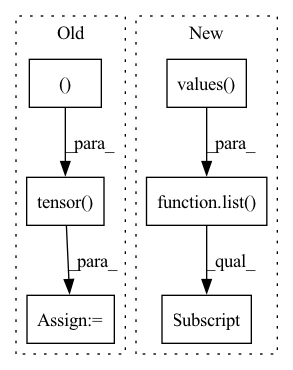

Pattern ID :37779

Before Change
assert pos.shape == (z.shape[0], 3)
assert conf["formation_energy"].attrs["units"] == "eV"
y = pt.tensor(conf["formation_energy"][()], dtype=pt.float64)
assert y.shape == ()
assert conf["forces"].attrs["units"] == "eV/Å"
dy = -pt.tensor(conf["forces"], dtype=pt.float32)
After Change
load_confs = self._load_confs_1_0
elif version == "2.0":
assert len(h5.keys()) == 1
mols = list(h5.values())[0].items()
load_confs = self._load_confs_2_0
else:
raise RuntimeError(f"Unsuported layout verions: {version}")
In pattern: SUPERPATTERN
Frequency: 3
Non-data size: 6
Instances
Fragment ID: 108403191
Project Name: torchmd/torchmd-net
Commit Name: d23e6500f2cef1fa56d6c99ce5fdb983f1379bca
Time: 2022-10-28
Author: peastman@stanford.edu
File Name: torchmdnet/datasets/ace.py
M Class Name: Ace
N Class Name: Ace
M Method Name: sample_iter(2)
N Method Name: sample_iter(1)
M Parent Class: Dataset
N Parent Class: Dataset
M File Name: torchmdnet/datasets/ace.py
N File Name: torchmdnet/datasets/ace.py
M Start Line: 72
M End Line: 123
N Start Line: 144
N End Line: 206
'>
Before Change
c_label = d["centroids"][d["current_label"]]
signal = np.zeros(d["original_size"], dtype=np.float32)
signal[c_label["X"], c_label["Y"], c_label["Z"]] = 1.0
signal = signal[
d["slices_cropped"][-3][0] : d["slices_cropped"][-3][1],
d["slices_cropped"][-2][0] : d["slices_cropped"][-2][1],
d["slices_cropped"][-1][0] : d["slices_cropped"][-1][1],
]
signal = signal[None]
// Apply a Gaussian filter to the signal
signal_tensor = torch.tensor(signal[0])
pt_gaussian = GaussianFilter(len(signal_tensor.shape), sigma=self.sigma)
signal_tensor = pt_gaussian(signal_tensor.unsqueeze(0).unsqueeze(0))
signal_tensor = signal_tensor.squeeze(0).squeeze(0)
signal[0] = signal_tensor.detach().cpu().numpy()
signal[0] = (signal[0] - np.min(signal[0])) / (np.max(signal[0]) - np.min(signal[0]))
d["signal"] = signal
After Change
X, Y, Z = (
list(d["centroids"][d["current_idx"]].values())[0][-3],
list(d["centroids"][d["current_idx"]].values())[0][-2],
list(d["centroids"][d["current_idx"]].values())[0][-1],
)
signal[:, X, Y, Z] = 1.0
'>
Fragment ID: 108403127
Project Name: project-monai/monailabel
Commit Name: f45854cefd4034e2f4740c50a834443df48dfc65
Time: 2022-08-06
Author: diazandr3s@gmail.com
File Name: sample-apps/radiology/lib/transforms/transforms.py
M Class Name: GaussianSmoothedCentroidd
N Class Name: GaussianSmoothedCentroidd
M Method Name: __call__(2)
N Method Name: __call__(2)
M Parent Class: MapTransform
N Parent Class: MapTransform
M File Name: sample-apps/radiology/lib/transforms/transforms.py
N File Name: sample-apps/radiology/lib/transforms/transforms.py
M Start Line: 157
M End Line: 182
N Start Line: 181
N End Line: 206
'>
Before Change
assert pos.shape == (z.shape[0], 3)
assert conf["formation_energy"].attrs["units"] == "eV"
y = pt.tensor(conf["formation_energy"][()], dtype=pt.float64)
assert y.shape == ()
assert conf["forces"].attrs["units"] == "eV/Å"
neg_dy = pt.tensor(conf["forces"][...], dtype=pt.float32)
After Change
mols = h5.items()
elif version == "2.0":
assert len(h5.keys()) == 0
mols = list(h5.values())[0].items()
else:
raise RuntimeError(f"Unsuported layout verions: {version}")
'>
Fragment ID: 108403189
Project Name: torchmd/torchmd-net
Commit Name: fdbbd9d91ea0ec8e8a0ea2ec63be8b8bd2e4cb61
Time: 2022-10-17
Author: r.galvelis@acellera.com
File Name: torchmdnet/datasets/ace.py
M Class Name: Ace
N Class Name: Ace
M Method Name: sample_iter(2)
N Method Name: sample_iter(2)
M Parent Class: Dataset
N Parent Class: Dataset
M File Name: torchmdnet/datasets/ace.py
N File Name: torchmdnet/datasets/ace.py
M Start Line: 81
M End Line: 125
N Start Line: 110
N End Line: 140